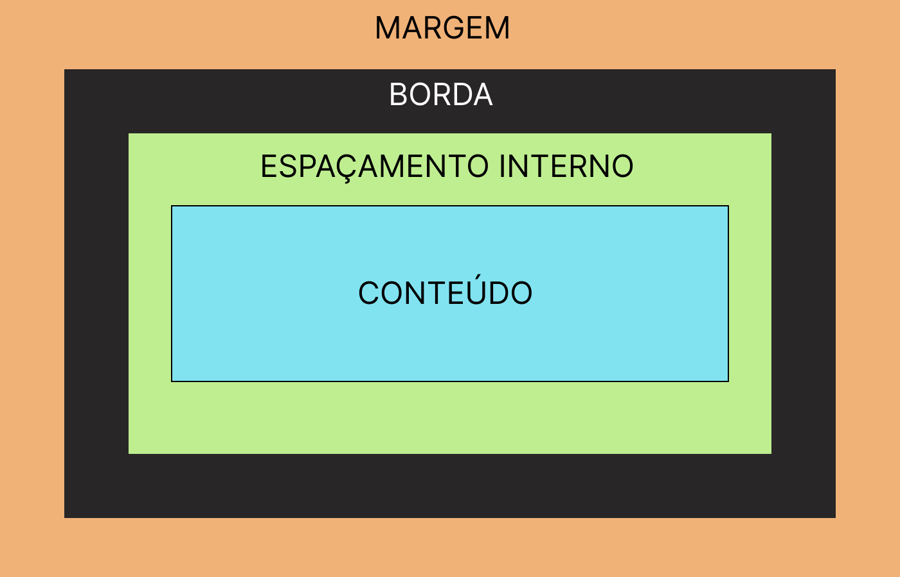

5 - Box Model e Layout
O Box Model no CSS é essencial para o desenvolvimento web, pois define como os elementos são dispostos e estilizados na página.

Componentes do Box Model:
1. Largura (width)
Define a largura do conteúdo de um elemento.
2. Altura (height)
Define a altura do conteúdo de um elemento.
3. Preenchimento Interno (Padding)
- padding-top: Espaço interno no topo.
- padding-right: Espaço interno à direita.
- padding-bottom: Espaço interno na parte inferior.
- padding-left: Espaço interno à esquerda.
- padding: Define o mesmo preenchimento para todos os lados.
4. Bordas (Border)
- border-width: Define a largura da borda.
- border-style: Define o estilo da borda.
- border-color: Define a cor da borda.
5. Margens (Margin)
- margin-top: Define a margem superior.
- margin-right: Define a margem à direita.
- margin-bottom: Define a margem inferior.
- margin-left: Define a margem à esquerda.
- margin: Define a mesma margem para todos os lados.
6. Display
Define como o elemento será exibido na página.
- Block: O elemento ocupa toda a largura disponível.
- Inline: O elemento ocupa apenas o espaço necessário.
- Inline-block: Combina as características de block e inline.
Exemplo 1: Definindo Largura (width)
Box Model
Definindo Largura
<div style="background-color: blue; width: 50%">
<h1>Box Model</h1>
<p>
Definindo Largura
</p>
</div>
Exemplo 2: Definindo Altura (height)
Box Model
Definindo Altura
<div style="background-color: blue; height: 2rem">
<h1>Box Model</h1>
<p>
Definindo Altura
</p>
</div>
Exemplo 3: Preenchimento Interno (Padding)
Box Model
Definindo Preenchimento
<div style="background-color: blue; padding: 1rem">
<h1>Box Model</h1>
<p>
Definindo Preenchimento
</p>
</div>
Exemplo 4: Bordas (Border)
Box Model
Definindo Borda
<div style="background-color: blue; padding: 1rem">
<h1 style="border-width: 5px; border-style: solid; border-color: #fff;">Box Model</h1>
<p>
Definindo Borda
</p>
</div>
Exemplo 5: Margens (Margin)
Box Model
Definindo Margens
<div style="background-color: blue; margin: 10px">
<h1>Box Model</h1>
<p>
Definindo Margens
</p>
</div>
Exemplo 6: Display
1. Block
Block 1
Block 2
Block 3
<div style="display: block; background-color: blue; margin-bottom: 0.2rem">Block 1</div>
<div style="display: block; background-color: blue; margin-bottom: 0.2rem">Block 2</div>
<div style="display: block; background-color: blue">Block 3</div>
2. Inline (Ignora propriedades de largura e altura)
Inline 1
Inline 2
Inline 3
<div style="display: inline; background-color: blue;">Inline 1</div>
<div style="display: inline; background-color: blue;">Inline 2</div>
<div style="display: inline; background-color: blue;">Inline 3</div>
3. Inline-block (Respeitam as propriedades de largura e altura)
Inline-block 1
Inline-block 2
Inline-block 3
<div style="display: inline-block; background-color: blue;">Inline-block 1</div>
<div style="display: inline-block; background-color: blue;">Inline-block 2</div>
<div style="display: inline-block; background-color: blue;">Inline-block 3</div>